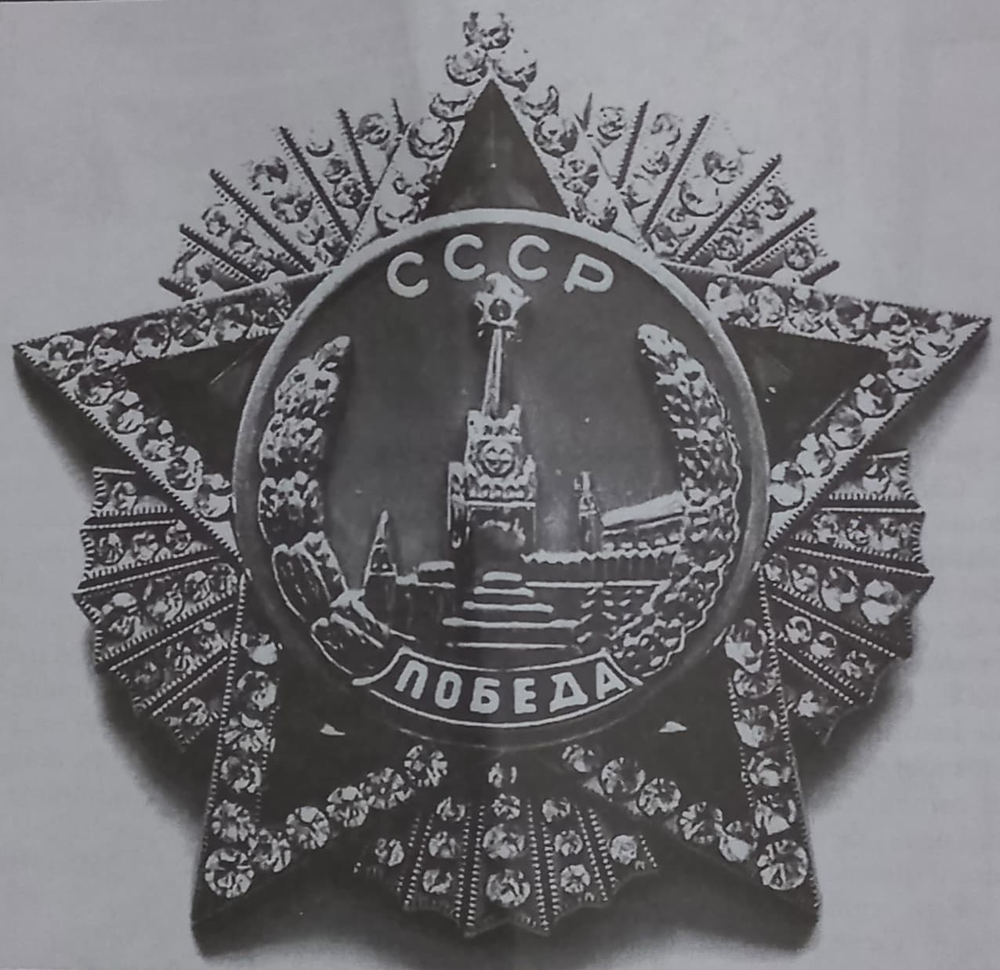
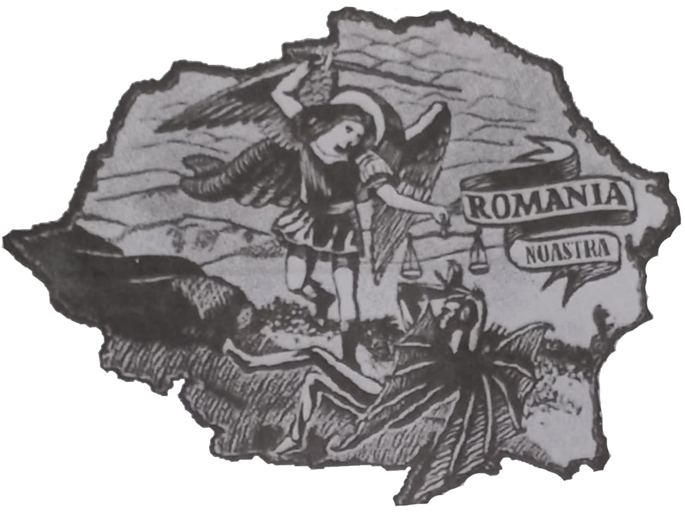
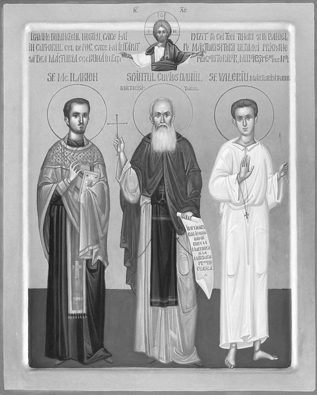

Clasa a patra a fost primul contact cu istoria. Îmi aduc aminte cât de frumos ne vorbea doamna învățătoare de eroii țării, de curajul și jertfa lor, dar mai ales de România Mare. Încă de mic, mereu mi-am pus întrebarea: Cum de visul milenar al românilor, România Mare, a durat doar 22 de ani? O vedeam ca pe un vis – cum l-au văzut și înaintașii, cum îl văd și îl vedem din nou acum, o vedeam ca realizarea de secole a neamului nostru oropsit. Pe oricine întrebam, mă lăsa rece și fără lămurire. Mereu mi s-a răspuns fie că a fost un context politic nefavorabil, fie că soldații își pierduseră din curajul lor sau că pentru menținerea relațiilor externe cu anumite state, a trebui să facem acest sacrificiu. Doar cei apropiați de inima mea au putut să-mi răspundă că nu mai avea cine să o apere, pentru că știau adevărul. Pentru unii poate par copilăros și articolul deja sună a pagină de jurnal, dar de fapt rezumă transformarea care s-a produs în timp în mintea și în sufletul meu, până când am ajuns la concluzia că România Mare a început să existe odată cu oamenii ei cei mai valoroși, generația interbelică. Am simțit puterea lăuntrică a neamului nostru și nu am crezut nimic din răspunsurile reci cele care mi s-au spus când eram copil!
Prea puțini mi-au răspuns că de fapt totul a pornit de la cârmuirea slabă și complet nevrednică a regelui Carol al II-lea și a politicienilor țării, care au permis descompunerea teritorială, pe fondul jocurilor făcute de marile puteri în timpul celui deal Doilea Război Mondial.
Pactul Molotov-Ribbentrop, cunoscut și ca Pactul Stalin-Hitler, a fost tratatul de neagresiune încheiat între URSS și Germania nazistă, semnat la Moscova, în prezența atentă a lui Stalin, la 23 august 1939 de către ministrul de externe sovietic (Molotov) și ministrul de externe german (Ribbentrop). Prin acest pact secret, cei doi lideri, Hitler și Stalin, își împărțeau zonele de influență în Scandinavia, țările baltice și Europa de est. Pe noi ne interesează prevederea prin care Stalin dorea Moldova dintre Prut și Nistru și Bucovina în corpul colosului sovietic.
Pe baza acestei înțelegeri secrete cu Hitler, în seara de 26 iunie 1940, România avea ultimatum din partea URSS-ului să cedeze Moldova dintre Prut și Nistru și Moldova de nord – Bucovina. Atât palatul regal cât și guvernul condus de Gheorghe Tătărescu nu au reacționat la cererile abuzive ale bolșevicilor (deși s-a făcut o ședință a Consiliului de Coroană pe această problemă) și au permis tancurilor sovietice să sfâșie trupul sfânt al țării. Pe lângă aceste teritorii, a mai fost răpit și Ținutul Herța care nu făcea parte nici din Bucovina, nici din Basarabia și nici nu fusese revendicat de URSS. Evacuarea armatei și administrației române a fost însoțită de vaste acțiuni antiromânești ale sovieticilor și grupurilor de comuniști civili (jafuri, ucideri, violuri), în urma retragerii murind peste 30.000 de soldați români.
Potrivit istoricului Dinu C. Giurescu, trupele sovietice intră în Basarabia și Bucovina, „încă din noaptea de 27 spre 28 iunie”, la ora 3 dimineața, străpungând teritoriul românesc prin cinci puncte. În același timp, grupuri specializate organizează acțiuni antiromânești cu scopul de a crea panică, dezorganizare și confuzie generală. Astfel de acțiuni au loc în orașele: Chișinău, Cernăuți, Soroca, Tighina și Reni. Starea de spirit a populației basarabene, încă de la începutul evacuării armatei, administrației și civililor români, este consemnată de sursele sovietice astfel: „…rușii indiferenți; evreii aclamă intrarea Sovietelor în Basarabia. Românii de la sate surprinși de evenimente, nu înțeleg ce se petrece”. Documentele strânse arată că „actele de agresiune și batjocorire” întreprinse împotriva armatei române care se replia începând cu data de 28 iunie 1940, au fost inițiate și desfășurate de armata sovietică în colaborare cu bandele formate mai ales din minoritari. Chiar și regele Carol al II-lea acordă în memoriile sale multe rânduri crimelor produse după cedarea Basarabiei.
Doar în perioada 1940-1941, Stalin a deportat 300.000 de români basarabeni și bucovineni în Siberia, iar până în anul 1964 au fost deportați în Siberia și Kazahstan în total 1,2 milioane de români din Basarabia și Bucovina. Aceste cifre prezentate de Victor Barsan în Masacrul inocenților, atestate de mulți istorici, în realitate sunt de fapt mai mari, conform statisticilor oficiale sovietice (care nu s-au sfiit să noteze cifrele reale), iar consecințele produse de aceste deportări masive ale populației românești în Orientul îndepărtat se resimt astăzi, ca și acum 50-70 de ani printr-un intens proces ce rusificare a populației românești rămase între Prut și Nistru sau dincolo de râurile Bug, Don sau Volga, spre Kazahstan. Evenimentele din 1940 au fost începutul celui de-al Doilea Război Mondial pentru România.
Din iunie 1940 până astăzi, Bucovina și Moldova toată („Moldova lui Ștefan cel Mare”) a fost a noastră doar trei ani, în perioada guvernării militare a mareșalului Antonescu, între 1941 și 1944. De atunci ea continuă să trăiască ca un copil avortat, uitat de părinții reprezentați de pătura conducătoare a statului, dar mereu neuitată și profund iubită de adevărata familie, de frații ei de sânge care năzuiesc cu credință să soarbă Prutul, precum Milcovul la 1859 și să-i liniștească somnul de veci al Binecredinciosului Voievod Ștefan cel Mare care se zvârcolește în mormântul său de la Mănăstirea Putna, știind că ne-a lăsat Moldova-ntreagă, iar noi am împărțit-o hoardelor de-afară (sovietice), după cum ne aduce aminte cântecul Ștefan la Daniil Sihastrul, interpretat la chitară de Victor Socaciu, pe versuri de Andrei Ciurunga.
Prin semnarea la 30 august 1940 a odiosului Diktat de la Viena, prin care România a fost silită să cedeze Ungariei horthyste (de la numele conducătorului statului – Horthy) aproape jumătate din teritoriu (43.492 km2) și să părăsească practic 7 milioane de români a fost al doilea pas în fărâmițarea țării. Deși teritoriul a fost recuperat în 1944, e imposibil să nu vorbim despre cele întâmplate.
Timp de 4 ani, din august 1940 până în august 1944, jumătate din Transilvania a făcut parte din Ungaria. Suferințele pe care au vrut să ni le dea mai marii lumii nu ar fi fost destule dacă nu pârjoleau și sufletul românesc din Transilvania, suferințe care au durat sute de ani, exercitate de unguri și austrieci asupra românilor, pentru desțelenirea Ortodoxiei și a naționalismului statornic transilvănean, au continuat prin politica conducătorului statului maghiar, amiralul Miklós Horthy. (Pentru mai multe informații recomand spre lectură cartea Suferințele din Ardeal de Vasile Stoica.)
Pentru a rezuma în articol povestea lungă a suferințelor românești din perioada 1940-1944, am să vă dau un fragment din scrierile teoreticianului programului de exterminare a românilor din Transilvania, Dücsö Csaba: „Voi suprima pe fiecare valah ce-mi va ieși în cale! Pe fiecare îl voi suprima! Nu va fi îndurare. Voi aprinde noaptea satele valahe! Voi trece prin sabie toată populația. Voi otrăvi toate fântânile și voi ucide până și copiii din leagăn! În germene voi distruge acest neam de hoți si ticăloși! Nu va fi pentru nimeni nici o milă! Nici pentru copiii de leagăn, nici pentru mama care va naște copil!”
Bunicul meu, care a avut de suferit în urma ocupației horthyste, dar a ajuns până la urmă să fie salvat și dus în tabăra de refugiați de la Sighișoara, îmi povestea adesea când aveam 11-13 ani de ororile pe care le-au dezlănțuit maghiarii, iar relatările lui „din teren”, coincid cu relatările istoricilor români. Bunica mea, care, de asemenea, a suferit de pe urma prigoanei îmi aduce aminte mereu de lupta străbunicului meu, Gheorghe Bucur, care luptând cu alți români din zona Topliței (jud. Mureș pe atunci, astăzi jud. Harghita) încă din 1941 împotriva administrației maghiare, a fost capturat și dus în lanțuri la Cluj (redenumit atunci de unguri, Kolozsvár) și supus la torturi pentru că își apăra „sărăcia și nevoile și neamul”. Evadând, s-a întors acasă după multă vreme, la sfârșitul războiului, arătând cuceritorului că „tot ce mișcă-n țara asta, râul, ramul, mi-e prieten numai mie, iară ție dușman este.”
Tot bunica îmi spune și acum despre trupele sovietice „eliberatoare” (care au venit călare pe tancuri, camioane, cai și… cămile) care începând cu 1944 au ocupat România, până la retragerea lor oficială în 1956. După actul de la 23 august 1944, când întorceam armele împotriva nemților, sovieticii au venit și au prădat țara, făcând numeroase jafuri, violuri și ucideri, precum au făcut și la „eliberarea” Basarabiei și Bucovinei în iunie 1940 și după 1944.
Lașitatea și practic incompetența în asemenea probleme de importanță mai mult decât capitală de care a dat dovadă regele Carol al II-lea prin acțiunile (sau neacțiunile) sale, culminând cu abdicarea sa la 6 septembrie 1940 și fuga în străinătate, a dus la fărâmițarea continuă a țării, nu doar prin smulgerea Basarabiei, Bucovinei, Herței și Transilvaniei de nord, ci și prin „cedarea”, smulgerea Cadrilaterului (sudul Dobrogei), a doua zi după abdicarea regelui, la 7 septembrie, prin Tratatul de la Craiova.
Moștenitorul tronului, Regele Mihai, din lipsa de experiență datorată tinereții nu a putut face față situației și a închinat practic țara sovieticilor în 1944, fiind decorat de I.V. Stalin cu Ordinul sovietic Victoria cu diamante, „pentru actul curajos” – cum îl numea Stalin, adică actul trădător – cum l-au numit majoritatea românilor.
Armistițiul cu Aliații din 1944 de încetare a ostilităților cu URSS a fost semnat în termeni impuși aproape în întregime de sovietici direct prin Stalin. Armistițiul nu a împiedicat o ocupație sovietică rapidă, nici capturarea de către URSS a circa 130.000 de militari români, duși ulterior în prizonierat în Uniunea Sovietică, unde mulți au pierit în lagăre de muncă forțată. Peste trei ani, Regele Mihai, la amenințările cu viața din partea P.C.R., a cedat, abdicând în decembrie 1947.

„România a fost înfloritoare în perioada interbelică. Atunci România a trăit momentul ei cel mai intens din istorie. Dacă va fi recuperat spiritul interbelic, România va reveni acolo unde îi e locul, între țările de frunte ale Europei.”
Se știe că după 1944 comunismul și-a început ascensiunea în România, ca în 1947 să avem oficial guvernare comunistă. Au urmat peste 45 de ani de teroare roșie în România, fiind arestați peste 2 milioane de oameni și peste 250.000 uciși în închisori. De ce? Ca astăzi să avem blocuri sau Canalul Dunăre-Marea Neagră? Realizările socio-economice și de infrastructură ale comunismului nu scuză jertfa poporului român! Nu!
După 1947 au fost aruncate în temniță ultimele rămășițe ale oamenilor fostelor regimuri și aici nu vorbim doar de politicieni care în condițiile din închisori au cedat psihic și s-au dezis de valorile românești și creștinești – vorbim de intelectuali (profesori, preoți, călugări, medici, avocați etc.) și de studenți și elevi, care, precum strămoșii noștri, nu au renunțat nici la Crezul Ortodox, nici la Crezul Românesc în fața cotropitorilor sovietici. Imaginează-te tu, elev de liceu sau student, de 17-24 de ani, că ție mă adresez! Imaginează-te în temniță, 15 sau 20 de ani pentru că nu vrei să renunți la credința ta! Ce ai face? Ai renunța la ea și ai cocheta cu regimul și ai ajunge ceea ce morții și generațiile de azi numesc pe bună dreptate ca trădător, delator sau scursură morală sau te-ai menține statornic în credința ta strămoșească și ai fi gata oricând să mori pentru ea, precum cei care au murit în temnițe și astăzi poporul îi slăvește ca eroi ai neamului și sfinți? Spune-mi!
O colegă de-a ta de generație ți-a vorbit mai devreme de Imunizarea cu Eminescu. Eu îți vorbesc acum de imunizarea cu generația interbelică, care l-a avut ca părinte spiritual pe Eminescu. Cine i-a educat pe acei tineri cărora poporul le pictează icoane și le zidește biserici astăzi? Nae Ionescu, Simion Mehedinți-Soveja, Nichifor Crainic, Corneliu Z. Codreanu, Sextil Pușcariu, Ion Moța, Mircea Vulcănescu, Mircea Eliade, Radu Gyr, Gheorghe Racoveanu, Vasile Marin, Constantin Noica, Petre P. Panaitescu, Petre Țuțea, Părintele Dumitru Stăniloaie și alții au fost liderii carismatici care prin opera lor de zidire a unui viitor românesc prin „omul nou” – care trebuia să aibă toate calitățile ancestrale creștinești și românești – au răspuns degradării societății românești începută în perioada interbelică. Numele lor a fost șters din istoria „oficială” dictată de politica P.C.R., iar cărțile lor arse sau furate din biblioteci.
Prigonirea lor a început încă din 1939 când regele Carol al II-lea ordonase executarea elitei intelectuale și studențești pentru că se împotrivea planurilor sale de a impune o odioasă dictatură personală. „Omul nou” a fost încă de atunci prigonit. Nu aveau politicienii nevoie de un român creștin, tânăr și cu sufletul curat, drept, muncitor și naționalist. De atunci a început furtul politic în țară! După moartea lor, țara a devenit prada vânzătorilor de neam.
Greșeala regelui Carol al II-lea avea să se vadă mai clar odată cu venirea comunismului la putere, când s-a impus în antiteză cu „omul nou”, modelul „omului sovietic” – toți să fie la fel, fără conștiință și dragoste sau drepturi, să renunțe la miile de ani de tradiții și de cristalizare a valorilor care au menținut flacăra românească vie și să devină prin aceasta sclavi ai intereselor Moscovei.
Negarea valorilor a trecutului și combaterea lor era obiectivul la care încercau comuniștii să ajungă în închisori prin procesul de reeducare. Doar că tinerii și profesorii interbelici au zădărnicit planurile sovieticilor, uimindu-i cu statornicia lor în credință și idealuri și cu dorința lor de moarte, în schimbul trădării trecutului.
Dezastrul prin care a trecut țara, cu mari pierderi teritoriale, pierderi de vieți omenești, de resurse naturale și instaurarea timp de aproape jumătate de secol a ciumei comuniste în România, a cărui urme le vedem zilnic până în ziua de azi, vine din greșeala fatală a decimării unei întregi generații de intelectuali.
Acum, la 17 ani, am înțeles că ei au stat zid în fața tăvălugului comunist și nu numai. Ei au fost suma tuturor dacilor viteji, suma tuturor voievozilor ca Ștefan cel Mare, Neagoe Basarab, Mihai Viteazu sau Constantin Brâncoveanu. Au fost suma tinerilor haiduci ca Tudor Vladimirescu și Avram Iancu și a tuturor sufletelor românilor care au murit pentru libertatea, demnitatea, integritatea și slava neamului românesc.
După cine să ne orientăm astăzi, dacă pseudo-intelectualii din zilele noastre, care s-au lăsat reeducați de comunism, susțin că „noi nu avem istorie, că nu ar trebui să existăm ca popor”, că „limba română este bună doar pentru înjurături”, că „Eminescu este cadavrul din debara de care trebuie să ne debarasăm” sau prezintă peste hotare România prin artă ca fiind o țară de măturători de străzi sau harta româniei sub forma unor organe sexuale? Acești „intelectuali” sunt lipsiți de orice urmă de demnitate și nici măcar nu îndeplinesc condiția minimală de a fi OM. Ei dau dovada că nici nu s-au născut pe aceste pământuri, pentru că altfel ar fi avut mame adevărate care să-i învețe dragostea de țară!
Generația interbelică se zvârcolește în mormânt pentru ceea ce se întâmplă astăzi, când avem voie să vorbim din nou despre ei, cei care ne-au revelat adevărata icoană a românului, nu vorbim. Puțini sunt cei care au supraviețuit temnițelor. Și mai puțini sunt cei care trăiesc acum. Să-i căutăm! Și să-i alegem ca profesori pe ei și pe dascălii lor, cei care au ridicat România pe cele mai înalte culmi prin opera și jertfa lor! Și trăind în același duh cu ei, să refacem prin jertfa și suflarea noastră România Mare!

AXA NOASTRĂ: ÎNTRE DUMNEZEU ȘI NEAMUL ROMÂNESC
Comentarii